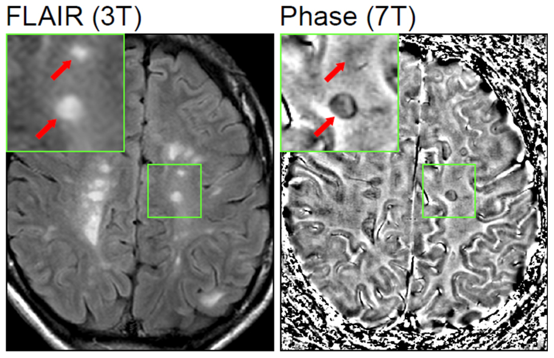

RM obrigatória: prova o que a clínica suspeita
Múltiplas lesões de substância branca — o olho da ressonância. A clínica motiva; a RM confirma.
Clínica não fecha sozinha
Não se pode fechar EM só pela clínica: é preciso mostrar a lesão desmielinizante. O exame que mostra a lesão da bainha de mielina: ressonância magnética.
Lesões de substância branca
A bainha de mielina tem cor de substância branca no SNC → lesões clássicas de substância branca, frequentemente nas partes mais internas do cérebro. Corte axial: múltiplas lesões de SB. Corte sagital: região periventricular (ao redor do ventrículo lateral) rica em SB, com várias lesões. Na neurite óptica, a RM pode mostrar nervo óptico branco, brilhante, inflamado, contrastando com o contralateral normal.
Tempo e espaço na RM
A RM pode mostrar o tempo e o espaço. Tempo na RM: distinguir lesão aguda vs lesão cicatricial — cicatriz = já aconteceu; aguda = está acontecendo agora. Espaço na RM: vários pontos de lesão inflamatória atual ou pregressa.
Fluxo: suspeita → RM confirma
Hoje, a ressonância é critério obrigatório na investigação de EM. A clínica motiva o exame: a clínica levanta a suspeita; a RM confirma. Fluxo: suspeita clínica → RM confirma (tempo e/ou espaço na imagem).
Resumo operacional: sem lesão desmielinizante na RM, não se fecha EM — por mais “McDonald clínico” que a história pareça.

Mehta V, Pei W, Yang G, et al. PLoS ONE 2013 · CC BY 2.5 · Wikimedia Commons

O olho da ressonância
As hiperintensidades em FLAIR são as lesões desmielinizantes de substância branca. Sem isso visível, a clínica não fecha EM — por mais que a história pareça McDonald.
O líquor entra como substituto de tempo — e a pegadinha do conversivo.
Quiz
Q1. Fechar EM somente pela história clínica de dois surtos:
Gabarito: B. A RM é critério obrigatório — só clínica não fecha.
(A) clínica não é padrão ouro isolado. (C) LCR não substitui RM. (D) não há biópsia.
Q2. Na RM, tempo e espaço correspondem a:
Gabarito: B. Tempo = distinguir lesão aguda de cicatricial; espaço = múltiplos pontos de lesão.
(A) não é idade/altura. (C)(D) não são o eixo tempo×espaço.